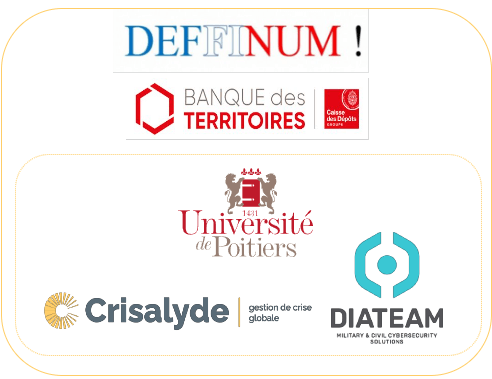

RéSISTeCC : se préparer aux cyber-attaques
Le projet RéSISTeCC, piloté par l'Iriaf de l'université de Poitiers, vise à développer une offre de
formation continue en gestion des crises cyber, adaptée aux besoins des petites entités
socio-économiques. L'objectif est de renforcer leur cyber résilience, c'est-à-dire leur capacité à
poursuivre leurs activités malgré une attaque.
Les objectifs principaux sont d'aider les organisations à réagir rapidement et efficacement à une
cyberattaque, tout en élaborant des plans de continuité d'activité robustes, testés à chaque niveau :
pilotage stratégique, réponse informatique, gestion médiatique et reprise d'activités.
Le projet associe trois partenaires : l'Iriaf, Crisalyde (expertise en exercices de crise
organisationnelle et gestion médiatique), et Diateam (spécialiste des cyber range et formation
technique). À terme, le projet prévoit le développement d’une plateforme immersive et interactive sera
proposée, allant de modules courts à un Diplôme universitaire.
Financements : Banque des territoires
L’exercice RéSISTeCC vise à répondre à un enjeu majeur : améliorer la coordination entre les équipes
techniques (SSI) et le niveau stratégique dans la gestion des crises cyber. L’innovation clé de cet
exercice est de simuler en temps réel ces deux dimensions.
L’exercice RéSISTeCC repose sur les principes classiques d’un exercice de crise simulé en conditions
réelles, destiné à la cellule de crise stratégique de l’organisme participant. L’animation de l’exercice
est assurée par une équipe comprenant un directeur, responsable du bon déroulement du scénario et de
l’atteinte des objectifs, ainsi que des animateurs en charge des aspects stratégiques et techniques
(SSI). Un expert local, complice de l’animation, garantit la crédibilité de l’évolution du scénario.
En faisant travailler ensemble la cellule de crise stratégique et la cellule technique SSI, l’exercice
permet de tester l’efficacité de la réponse globale à une crise, en alliant la prise de décisions
stratégiques et la résolution technique des incidents. Cette approche intégrée renforce la cohérence des
actions, améliore la communication inter-équipe, et garantit une réaction plus rapide et coordonnée lors
de véritables situations de crise.
Le dispositif d'exercice : Une cellule de crise stratégique, une équipe IT mises en
relation avec avec
une cellule d'animation via un dispositif informatique, et des moyens classiques de communication.
Le dispositif d'animation : Un animateur pour suivre la dimension stratégique ; un
animateur pour suivre
la dimension IT ; un observateur qui valide l'atteinte des objectifs pédagogiques.